제선기능사 (2008-02-03 기출문제)
1과목: 금속재료일반
1. 텅스텐은 재결정에 의해 결정립 성장을 한다. 이를 방지하기 위해 처리하는 것을 무엇이라고 하는가?
- 도핑(Doping)
- 아말감(Amalfam)
- 라이닝(Lining)
- 비탈리움(Vitallium)
(정답률: 77%)

2. 다음 중 초초두랄루민(ESD)의 조성으로 옳은 것은?
- Al-Si 계
- Al-Mn 계
- Al-Cu-Si 계
- Al-Zn-Mg 계
(정답률: 68%)
3. 재료의 소성이 니켈 36%, 크롬 12%, 나머지는 철(Fe)로서 온도가 변해도 탄성률이 거의 변하지 않는 것은?
- 라우탈
- 엘린바아
- 진정강
- 퍼멀로이
(정답률: 75%)
4. 소성변형이 일어난 재료에 외력이 더 가해지면 재료가 단단해지는 것을 무엇이라고 하는가?
- 침투경화
- 가공경화
- 석출경화
- 고용경화
(정답률: 96%)
5. 다음 중 경합금에 해당되지 않는 것은?
- 마그네슘(Mg) 함급
- 알루미늄(Al) 함급
- 베릴륨(Be) 함급
- 텅스텐(W) 함급
(정답률: 76%)
6. 재료에 대한 포아송비(poisson's ratio)의 식으로 옳은 것은?
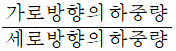
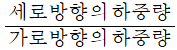
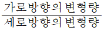
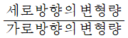
(정답률: 68%)
7. 금속의 일반적 특성에 대한 설명으로 틀린 것은?
- 수은을 제외하고 상온에서 고체이며 결정체이다.
- 일반적으로 강도와 경도는 낮으나 비중은 크다
- 금속 특유의 광택을 갖는다.
- 열과 전기의 양도체이다.
(정답률: 85%)
8. 응력-변형곡선에서 금속시험편에 외력을 가했다가 제거할 때 시험편이 원래 상태로 돌아가는 최대한계를 나타내는 것은?
- 항복점
- 탄성한계
- 인장강도
- 최대 하중점
(정답률: 88%)
9. 다음 중 펄라이트의 생성기구에서 가장 처음 발생하는 것은?
- ζ-Fe
- β-Fe
- Fe3C핵
- θ-Fe
(정답률: 84%)
10. 금속의 소성에서 열간가공(hot working)과 냉간가공(cold working)을 구분하는 것은?
- 소성가공률
- 응고온도
- 재결정온도
- 회복온도
(정답률: 92%)
11. 금속을 자석에 접근시킬 때 자석과 동일한 극이 생겨 서로 반발하는 성질을 갖는 금속은?
- 철(Fe)
- 금(Au)
- 니켈(Ni)
- 코발트(Co)
(정답률: 69%)
12. Fe-C 평형상태도에서 α-철의 자기변태점은?
- A1
- A2
- A3
- A4
(정답률: 83%)
13. 다음 중 철강을 분류할 때 “SM45C"는 어느 강인가?
- 순철
- 아공석강
- 과공석강
- 공정주철
(정답률: 69%)
14. 다음 중 Y합금의 조성으로 옳은 것은?
- Al-Cu-Mg-Mn
- Al-Cu-Ni-W
- Al-Cu-Mg-Ni
- Al-Cu-Mg-Si
(정답률: 76%)
15. 주철용탕에 최초로 칼슘-실리테이트를 접종하여 만든 강인한 회주철은?
- 칠드 주철
- 백심가단 주철
- 구상흑연 주철
- 미해나이트 주철
(정답률: 54%)
2과목: 금속제도
16. 다음 중 물체 뒤쪽 면을 수평으로 바라본 상태에서 그린 그림은?
- 배면도
- 저면도
- 평면도
- 측연도
(정답률: 83%)
17. 다음 물체를 제3각법으로 올바르게 투상한 것은?
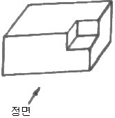
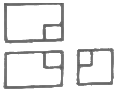
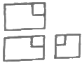
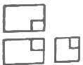
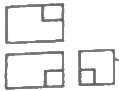
(정답률: 92%)
18. 다음 중 선긋기를 올바르게 표시한 것은 어느 것인가?
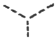
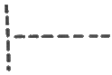
(정답률: 80%)
19. 다음 중 국제표준화기구를 나타내는 약호로 옳은 것은?
- JIS
- ISO
- ASA
- DIN
(정답률: 92%)
20. 도면에서 “No.8-36UNF"로 표시되었다면, 이 나사의 증류로 옳은 것은?
- 톱니나사
- 유니파이 가는나사
- 사다리꼴 나사
- 관용평행 나사
(정답률: 95%)
21. 그림의 조립도와 이에 대한 설명이 옳은 것으로만 나열한 것은?
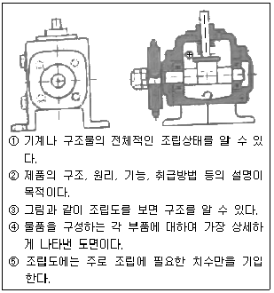
- ②, ③, ④
- ①, ②, ④
- ①, ②, ③
- ①, ③, ⑤
(정답률: 80%)
22. 다음 중 선의 굵기가 가장 굵은 선은?
- 치수선
- 지시선
- 외형선
- 해칭선
(정답률: 92%)
23. 한국산업규격에서 규정한 탄소 공구강의 기호는?
- SCM
- STC
- SKH
- SPS
(정답률: 88%)
24. 제작물의 일부만을 절단하여 단면 모양이나 크기를 나타내는 단면도는?
- 온단면도
- 한쪽단면도
- 회전단면도
- 부분단면도
(정답률: 73%)
25. 도면의 치수기입에서 “□20“이 갖는 의미로 옳은 것은?
- 정사각형이 20개이다.
- 단면 지름이 20m이다.
- 정사각형의 넓이가 20mm2이다.
- 한 변의 길이가 20mm인 정사각형이다.
(정답률: 84%)
26. 다음 중 ‘보오링’ 가공방법의 기호로 옳은 것은?
- B
- D
- M
- L
(정답률: 96%)
27. 구멍의 치수가
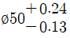
일 때의 치수공차로 옳은 것은?- 0.11
- 0.24
- 0.37
- 0.87
(정답률: 83%)
28. 다음 중 산소 부화에 의한 효과로 틀린 것은?
- 질소 강소에 의해 발열량을 감소시킨다.
- 바람 구멍 앞의 온도가 높아진다.
- 코크스의 연소 속도가 빠르다.
- 출선량을 증대시킨다.
(정답률: 66%)
29. 광석을 그 용융 온도 이하에서 가열하여 이산화탄소(CO2)또는 결정수(H2O) 등의 성분을 제거하는 조직은?
- 선광(dressing)
- 하소(calcination)
- 배소(rcasling)
- 소결(sintering)
(정답률: 83%)
30. 산업재해 원인 중 교육적 원인에 해당하는 것은?
- 구조 재료가 적합하지 못하다.
- 생산 방법이 적당하지 못하다.
- 점검, 정비, 보존 등이 불량하다.
- 안전 지식이 부족하다.
(정답률: 88%)
3과목: 제선법
31. 다음 중 철광석의 구비조건으로 틀린 것은?
- 피환원성이 나쁠 것
- 상당한 강도를 가질 것
- 철분을 많이 함유하고 있을 것
- 해로운 불순물이 적게 함유할 것
(정답률: 85%)
32. 고로 로체의 건조 후 침목 및 장입 원료를 로내에 채우는 것을 무엇이라 하는가?
- 화입
- 자화
- 충전
- 축로
(정답률: 84%)
33. 용선을 따라서 흘러나오는슬래그는 어디에서 분리하는가?
- 용선 레이들
- 토페도 카
- 주선기
- 스키머
(정답률: 80%)
34. 다음 중 코크스의 반응성을 나타내는 식으로 옳은 것은?
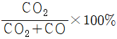
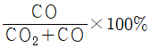
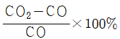
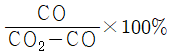
(정답률: 84%)
35. 다음 중 스치거나 문질러서 벗겨진 상해는?
- 찰과상
- 절상
- 부종
- 자상
(정답률: 90%)
36. 내용적 3795m3의 고로에 풍량 6000Nm3/mim 으로 송풍하여 선철을 8160ton/일, 슬래그 2690ton/일 생산하였을 때의 출선비(t/일/m3)는 약 얼마인가?
- 0.71
- 1.80
- 2.15
- 2.86
(정답률: 67%)
37. 다음 중 습식 청정기가 아닌 것은?
- 다이센 청정기
- 스프레이 워셔
- 허어들 워셔
- 여과식 가스 청정기
(정답률: 90%)
38. 장입물 중의 인(P)은 보시부에서 로상에 걸쳐 모두 환원되어 거의 전부가 산철 중으로 들어간다. 이 때 선철 중의 인(P)을 적게 하기 위한 설명으로 틀린 것은?
- 유해방지를 위하여 장입물 중에 인(P)을 적게 하는 것이 좋다.
- 인(P)의 유해를 적게 하기 위하여 급속 조업을 한다.
- 로상 온도를 높여 인(P)의 해를 줄인다.
- 염기도를 높게 하여 인(P)의 해를 줄인다.
(정답률: 59%)
39. 산업안전보건법에서는 공기 중의 산소농고가 몇 % 미만인 상태를 “산소결핍”으로 규정하고 있는가?
- 15
- 18
- 20
- 23
(정답률: 88%)
40. 용융환원로(COREX)는 환원로와 용융로 두 개의 반응기로 구분한다. 이 때 용융로의 역할이 아닌 것은?
- 환원가스의 생성
- 석탄의 건조 및 탈가스화
- 철광석의 간접환원
- 슬래그의 용해
(정답률: 67%)
41. 고로 내에 장입물의 강하가 정지하는 상태를 무엇이라고 하는가?
- 행김(hanging)
- 슬립(silp)
- 드롭(drop)
- 뱅킹(banking)
(정답률: 75%)
42. 고로조업시 바람구멍의 파손 원인으로 틀린 것은?
- 슬립이 많을 때
- 회분이 많을 때
- 송풍온도가 낮을 때
- 코크스의 균열감도가 낮을 때
(정답률: 73%)
43. 로내 장입물의 분포상태를 변경하는 방법이 아닌 것은?
- 장입선의 변경
- 층두께의 변경
- 용선차의 변경
- 장입순서의 변경
(정답률: 63%)
44. 다음 중 고로의 구조가 아닌 것은?
- 로구
- 노복
- 샤프트
- 탄화실
(정답률: 84%)
45. 용광로에서 생산되는 제강용 선철과 주물용 선철의 성분상 가장 차이가 많은 원소는?
- 규소(Si)
- 유황(S)
- 티탄(Ti)
- 인(P)
(정답률: 65%)
4과목: 소결법
46. 소결기 중 원료를 담아 소결이 이루어지는 설비인 Pallet에 설치된 Grate Bar의 구비조건이 아닌 것은?
- 고온강도가 높을 것
- 고온 내산화성이 좋을 것
- 열적 변형 균열이 적을 것
- 소결광과의 부착성이 좋을 것
(정답률: 66%)
47. 자광조에서 소결완료가 벨트 상에 배출되면 자동적으로 벨트 속도를 가감하여 목표량 만큼 접출하는 장치는?
- Constant Feed weigher
- Vibrating Feeder
- Table Feeder
- Belt Feeder
(정답률: 80%)
48. 소결광 성분이 보기와 같을 때 염기도는?
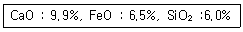
- 1.51
- 1.65
- 1.86
- 2.73
(정답률: 82%)
49. 미세한 분광을 드럼 또는 디스크에서 입상화한 후 소성경화해서 달걀 노른자 크기의 알갱이로 얻는 괴상법은?
- 로마스팅
- 산터링
- 펠레타이징
- 브리케팅
(정답률: 87%)
50. 다음 중 조재성분에 대한 설명으로 옳은 것은?
- 생산율은 CaO, SiO2의 증가에 따라 향상된다.
- 생산율은 Al2O3, MaO의 증가에 따라 향상된다.
- CaO, SiO2는 제품의 감도를 낮춘다.
- Al2O3, MgO는 결정수를 증가시킨다.
(정답률: 64%)
51. 광물의 미립자를 물에 넣고 부선재를 첨가하여 많은 기포를 발생시켜 기포표면에 필요한 광물의 입자를 붙게 하여 표면에 뜨게 하여 분리 회수하는 방법은?
- 증액선광
- 자력선광
- 미중선광
- 부유선광
(정답률: 85%)
52. 소결 원료에서 배합원료의 수분 값의 범위로 가장 적당한 것은?
- 1-2%
- 5-8%
- 10-17%
- 20-27%
(정답률: 85%)
53. 다음 중 소결반응에 대한 설명으로 틀린 것은?
- 저온에서는 확산결합을 한다.
- 고온에서는 용융결합을 한다.
- 용융결합은 자철광을 다량으로 배합할 때 일어나는 결합이다.
- 확산결합의 강도는 아주 강하며, 코크스가 많거나 원료입도가 미세할 때 볼 수 있다.
(정답률: 70%)
54. 다음 중 분광석을 괴상화하는 소결설비로 자동화가 가능하며 연속식이며, 대량생산용으로 가장 많이 사용하는 설비는?
- pelletizing식
- GW식(Greenawalt pen)
- DL식(Dwight-Lloyd aachine)
- AIB식(Allmanna Inginfors Byron disc)
(정답률: 85%)
55. 다음 중 석탄의 성질에 대한 설명으로 옳은 것은?
- 석탄을 건류할 때 괴상으로 코크스가 되는 성질을 점결성이라 한다.
- 석탄을 습속히 가열하면 연화 및 팽창을 하게 되는데 이 때 연화팽창하는 성질을 코크스화성이라 한다.
- 생성한 괴의 강도를 좌우하는 성질을 점착성이라 한다.
- 코크스화성이 큰 것을 약점결탄, 작은 것을 강정갈탄이라 한다.
(정답률: 50%)
56. 다음 중 능철광을 나타내는 화학식으로 옳은 것은?
- FeCO3
- Fe2O3
- Fe3O4
- FeO2
(정답률: 78%)
57. 소결작업 과정에서 소결 원료의 층을 상부에서 하부로 옳게 나열한 것은?
- 용융대-소결대-습원료대-건조대
- 소결대-용융대-건조대-습원료대
- 습원료대-건조대-용융대-소결대
- 소결대-건조대-습원료대-용융대
(정답률: 51%)
58. 다음 중 피환원성이 가장 우수한 것은?
- 자철광
- 회선철
- 화화광
- 자용성 펠리트
(정답률: 55%)
59. 소결 완료에서 반광의 입도는 일반적으로 몇 mm이하의 소결광인가?
- 5
- 12
- 24
- 48
(정답률: 74%)
60. 소결조업에 사용되는 용어 중 FFS가 의미하는 것은?
- 고로 가스
- 코크스 가스
- 화염진행속도
- 최고도달온도
(정답률: 93%)